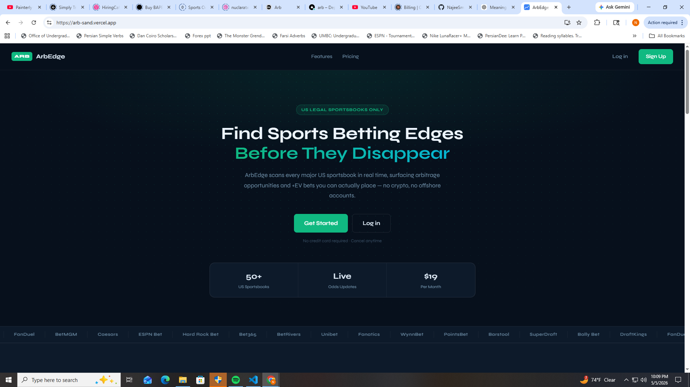

Senior Data Scientist and Analyst with 6+ years building fraud detection systems, ML pipelines, and real-time analytics at government scale. I dig into complex data problems and surface what matters — from $600K+ in fraudulent tax claims caught to real-time arbitrage engines processing live market data.

Real-time sports betting analytics platform that aggregates live odds from 50+ US sportsbooks simultaneously, detects arbitrage opportunities and positive expected value (+EV) bets as they appear, and delivers tiered access to subscribers via a web and mobile interface.
Quantitative trading system that monitors institutional options flow (unusual whale activity) via API, scores signals on a composite of implied volatility, premium size, and volume/open-interest ratio, then sizes positions using half-Kelly criterion for variance reduction. Runs two concurrent strategies: same-day gamma scalps on SPY and multi-day swing trades following high-conviction whale flow.
Detecting fraudulent tax credit claims across millions of annual filings — Section 45Q carbon capture credits, Section 30D clean vehicle credits, and identity theft patterns in tax returns. The challenge: high-volume structured data mixed with ~50,000 unstructured filing descriptions, under strict data governance constraints.
Forecasting regional revenue per test administration to support capacity planning, and building ML models to classify unstructured text in datasets used for fraud tagging — an early application of the techniques I would later apply at scale at the IRS.
I'm open to contract engagements and full-time roles in data science and analytics — particularly fraud detection, financial analytics, and applied ML. Based in Alexandria, VA. Remote-first.